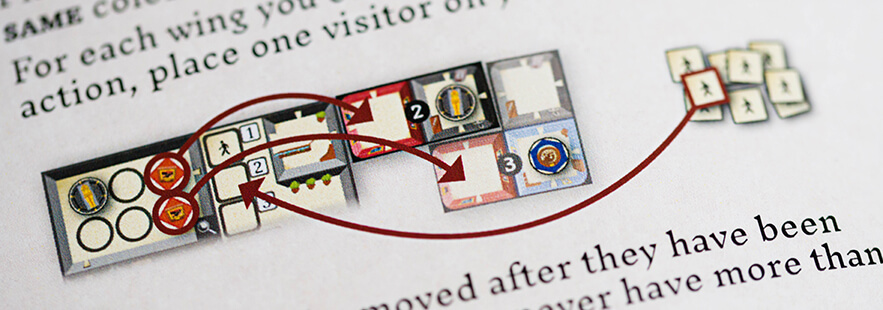

In the board game Curators, the players compete to create the most reputable museum. The rulebook was designed and tested as part of a bachelor thesis. When designing the rulebook, the players experience and ease of learning was the main focus, as we believe it should always be in this type of project.
No amount of design can make up for badly written rules. The ruletext was written by the publisher and only needed minor changes for clarity.
Lists are used to make the rules more perspicuous to the reader, and to make it easier to look up rules during play.
Pictures are invaluable in most rulebooks, and they are used extensively in all parts of the rulebook for Curators to support the reading and to clarify concepts.
A glossary can help readers look up terms and find more information elsewhere in the rulebook.
Taking advantage of the back of the rulebook, the quick reference is easily accessible to all players during the game.
As an aid for players looking for specific rules, a color coding was developed and applied to the outer edges of the rulebook pages.
Curators include solo rules. To make is easier for solo players, as well as for non solo players, the solo rules were placed in its own solo rulebook.
As the solo play mode includes several missions, much of the solo rulebook was dedicated to those missions. Check boxes were added to help solo players keep track of their progress.
No matter how much time you put into creating a rulebook, it is almost impossible to say how well it will perform with actual players. This is why blind testing your rulebook is of vital importance. Since this rulebook was made as part of a bachelor thesis, the testing to evaluate the creation was mandatory.
By letting the playtesters learn and play the game with no aid besides the rulebook, it becomes clear to the observer what works and what does not. When blind testing the rulebook for Curators, it was confirmed that the rulebook was functional, and what problems arose could easily be addressed.
This rulebook was made as part of a bachelor's thesis. If you are interested in reading the thesis, it can be found here.